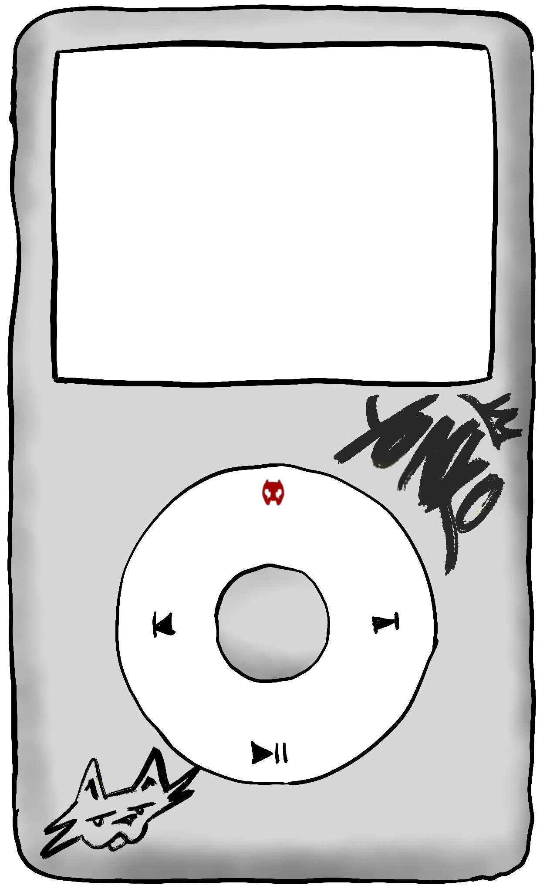

—
0:000:00
01 / 06
—

Para una experiencia completa: Dale al play mientras te lees esta mierda.
Descarga las canciones en tu móvil y hazlas tuyas para que nadie te las quite
Índice


Hace miles de años se juntaron los hechiceros de todos los reinos para llevar a cabo una misión que cambiaría el curso del mundo. Querían invocar al ángel del miedo, al que ellos acusaban de todos los problemas que acechaban a los 7 reinos. Juntaron los textos más prohibidos de cada reino y clan de brujos para encontrar la fórmula que trajera al ángel y poder matarle.


Esperaron pacientes cientos de años hasta que la línea entre todos los planetas fuera recta y realizaron su locura con palabras de un idioma extraño delante de una lumbre roja. No se esperaron lo que ocurrió. Del fuego salieron tres cabezas con cuernos y cuchillos en vez de dientes.

No les dio tiempo a los asustados brujos a huir cuando una de las cabezas arrancó tripas y brazos del encapuchado más cercano. Esto mientras otra cabeza apuñalaba con su boca al gato de mala suerte que pasaba por ahí.


Había otra sorpresa, esta vez entre el público de esta sangrienta escena. Uno de los brujos era un infiltrado.

Un calvo enorme que pretendía acabar con el resto de sus compañeros y llevarse al ángel con vida. Venía preparado para dar buenas ostias. Lo que no sabía era si las balas serían suficientes o si solo le harían cosquillas a ese triple bicho. Aun así dispararía igual. Y eso hizo. Aprovechó el momento de distracción para atacar la tercera e inocente cabeza y disparó sin pensar.
La cabeza no se inmutó. Ni se movió. Ni parpadeó. El disparo había sonado y la cosa seguía ahí, mirándole, como si le estuviera esperando.

El calvo no lo pensó. No había tiempo para pensar. Sacó el frasquito del bolsillo interior, el que llevaba cosido desde hacía años para un momento que no sabía si llegaría, y empezó a cantar. No era una canción. Era algo anterior a las canciones. Palabras de una lengua que no había aprendido sino recordado.
La bestia entró. No supo cómo. Solo que el frasquito pesaba más que antes.

Se quedó un momento mirándolo en la mano. Frío. Húmedo, por alguna razón que prefirió no investigar. Lo guardó. Recogió al gato del suelo casi sin mirar y se fue.


En sus manos quedaron nuevas misiones hiladas. Descubrir si eso era realmente un ángel. Si lo era, lo protegería. Si no, lo mataría.

En cualquier caso, una de sus normas como brujo ante entes de este tipo era — como explicarlo — congelarlo, unirlo en un objeto físico. Si era demonio sería más fácil de atrapar. Si fuera ángel sería más fácil de esconder y proteger.

Con los restos de la cara de una de las tres cabezas y la sangre infectada del gato, el brujo forjó una máscara.

La guardó y protegió hasta su muerte, 500 años después. Actualmente nadie sabe de la existencia de este objeto, ni siquiera de esta historia. Solo tú. Ahora tendré que x|||x
Ah! y por cierto

FIN